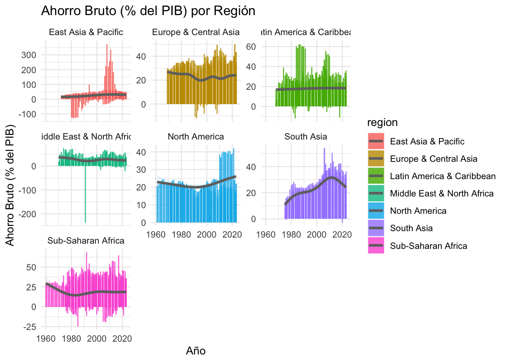
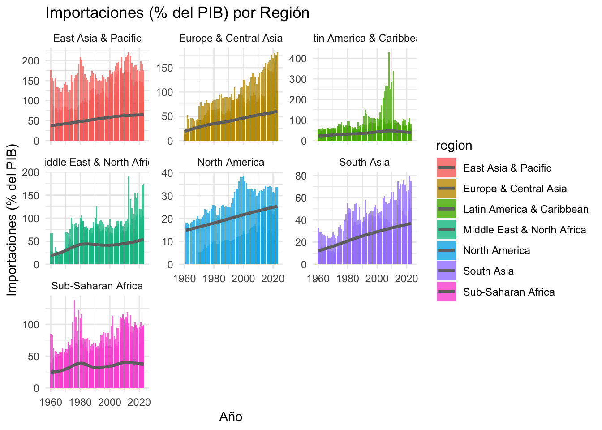
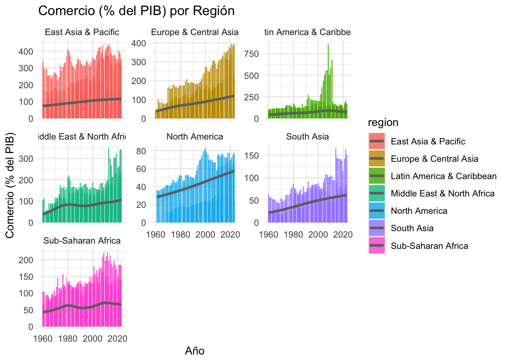

# A tibble: 7 × 8
region media mediana desviacion minimo maximo varianza n
<chr> <dbl> <dbl> <dbl> <dbl> <dbl> <dbl> <int>
1 East Asia & Pacific 27.5 26.4 29.8 -129. 373. 885. 899
2 Europe & Central Asia 22.6 22.8 7.33 -12.0 50.2 53.7 1704
3 Latin America & Caribb… 18.1 17.6 7.86 -11.8 62.5 61.8 1097
4 Middle East & North Af… 26.3 25.0 17.1 -236. 74.6 293. 711
5 North America 22.2 20.9 6.03 13.9 42.1 36.3 129
6 South Asia 23.9 22.8 9.40 -2.74 54.0 88.4 265
7 Sub-Saharan Africa 17.7 15.8 12.3 -25.0 68.5 151. 1414Análisis de Variables Macroeconómicas por Región
Ahorro Bruto, Importaciones y Comercio como % del PIB
Variable 1: Ahorro Bruto (% del PIB)
Estadísticas Descriptivas
Análisis del Comportamiento
El ahorro bruto presenta variaciones significativas entre regiones. Las estadísticas muestran que algunas regiones mantienen tasas de ahorro consistentemente altas, mientras otras experimentan mayor volatilidad. La desviación estándar revela la estabilidad o fluctuación de los patrones de ahorro en cada región, con valores extremos que reflejan períodos de crisis o expansión económica.
Visualización
`geom_smooth()` using method = 'gam' and formula = 'y ~ s(x, bs = "cs")'
El gráfico revela tendencias temporales importantes en el ahorro bruto por región. Se observan ciclos económicos reflejados en las variaciones del ahorro, con caídas pronunciadas durante períodos de recesión y patrones de recuperación que varían significativamente entre regiones. Algunas regiones muestran mayor estabilidad en sus tasas de ahorro a lo largo del tiempo.
Variable 2: Importaciones (% del PIB)
Estadísticas Descriptivas
# A tibble: 7 × 8
region media mediana desviacion minimo maximo varianza n
<chr> <dbl> <dbl> <dbl> <dbl> <dbl> <dbl> <int>
1 East Asia & Pacific 56.2 49.0 39.2 2.17 221. 1540. 1425
2 Europe & Central Asia 46.4 43.0 23.1 3.67 182. 534. 2140
3 Latin America & Caribbe… 36.4 30.5 27.8 4.15 429. 775. 1578
4 Middle East & North Afr… 42.3 35.1 23.7 0.0156 191. 563. 990
5 North America 20.9 21.0 8.91 5.20 38.6 79.4 131
6 South Asia 26.2 21.8 16.0 3.71 79.6 257. 367
7 Sub-Saharan Africa 35.3 30.9 18.0 1.13 139. 324. 2171Análisis del Comportamiento
Las importaciones como porcentaje del PIB reflejan el grado de dependencia comercial y la integración económica global de cada región. Las estadísticas revelan diferencias notables en los niveles promedio de importación, donde regiones con valores altos indican mayor dependencia del comercio exterior, mientras que la variabilidad muestra la consistencia de los patrones comerciales.
Visualización
`geom_smooth()` using method = 'gam' and formula = 'y ~ s(x, bs = "cs")'
Los patrones de importación muestran fluctuaciones correlacionadas con ciclos económicos globales. Se observan tendencias crecientes que indican mayor globalización en algunas regiones, junto con contracciones durante crisis económicas que reflejan la reducción de la demanda interna. La sensibilidad a eventos económicos externos varía considerablemente entre regiones.
Variable 3: Comercio Total (% del PIB)
Estadísticas Descriptivas
# A tibble: 7 × 8
region media mediana desviacion minimo maximo varianza n
<chr> <dbl> <dbl> <dbl> <dbl> <dbl> <dbl> <int>
1 East Asia & Pacific 102. 87.2 76.5 4.83 443. 5847. 1425
2 Europe & Central Asia 90.1 81.3 47.8 5.73 394. 2282. 2140
3 Latin America & Caribb… 69.1 57.5 54.6 9.38 863. 2985. 1569
4 Middle East & North Af… 84.1 73.7 45.6 0.0210 348. 2077. 990
5 North America 44.1 41.9 21.7 10.8 82.8 470. 131
6 South Asia 44.0 35.9 28.4 7.66 166. 809. 367
7 Sub-Saharan Africa 61.3 53.9 31.0 2.47 222. 960. 2171Análisis del Comportamiento
El comercio total representa el grado de apertura comercial y la integración en los mercados globales. Los resultados estadísticos muestran una amplia variación entre regiones en sus niveles de apertura comercial, con algunas economías altamente integradas globalmente y otras con enfoques más domésticos. La volatilidad indica la estabilidad de los flujos comerciales regionales.
Visualización
`geom_smooth()` using method = 'gam' and formula = 'y ~ s(x, bs = "cs")'
El comportamiento del comercio total evidencia el proceso de globalización con tendencias crecientes a largo plazo en la mayoría de regiones. Se observan contracciones pronunciadas durante recesiones mundiales, con velocidades de recuperación que varían según la estructura económica regional. Las fluctuaciones reflejan cambios en competitividad y demanda global.
Resumen Comparativo
Consolidado de Resultados Estadísticos
=== AHORRO BRUTO ===# A tibble: 7 × 8
region media mediana desviacion minimo maximo varianza n
<chr> <dbl> <dbl> <dbl> <dbl> <dbl> <dbl> <int>
1 East Asia & Pacific 27.5 26.4 29.8 -129. 373. 885. 899
2 Europe & Central Asia 22.6 22.8 7.33 -12.0 50.2 53.7 1704
3 Latin America & Caribb… 18.1 17.6 7.86 -11.8 62.5 61.8 1097
4 Middle East & North Af… 26.3 25.0 17.1 -236. 74.6 293. 711
5 North America 22.2 20.9 6.03 13.9 42.1 36.3 129
6 South Asia 23.9 22.8 9.40 -2.74 54.0 88.4 265
7 Sub-Saharan Africa 17.7 15.8 12.3 -25.0 68.5 151. 1414
=== IMPORTACIONES ===# A tibble: 7 × 8
region media mediana desviacion minimo maximo varianza n
<chr> <dbl> <dbl> <dbl> <dbl> <dbl> <dbl> <int>
1 East Asia & Pacific 56.2 49.0 39.2 2.17 221. 1540. 1425
2 Europe & Central Asia 46.4 43.0 23.1 3.67 182. 534. 2140
3 Latin America & Caribbe… 36.4 30.5 27.8 4.15 429. 775. 1578
4 Middle East & North Afr… 42.3 35.1 23.7 0.0156 191. 563. 990
5 North America 20.9 21.0 8.91 5.20 38.6 79.4 131
6 South Asia 26.2 21.8 16.0 3.71 79.6 257. 367
7 Sub-Saharan Africa 35.3 30.9 18.0 1.13 139. 324. 2171
=== COMERCIO TOTAL ===# A tibble: 7 × 8
region media mediana desviacion minimo maximo varianza n
<chr> <dbl> <dbl> <dbl> <dbl> <dbl> <dbl> <int>
1 East Asia & Pacific 102. 87.2 76.5 4.83 443. 5847. 1425
2 Europe & Central Asia 90.1 81.3 47.8 5.73 394. 2282. 2140
3 Latin America & Caribb… 69.1 57.5 54.6 9.38 863. 2985. 1569
4 Middle East & North Af… 84.1 73.7 45.6 0.0210 348. 2077. 990
5 North America 44.1 41.9 21.7 10.8 82.8 470. 131
6 South Asia 44.0 35.9 28.4 7.66 166. 809. 367
7 Sub-Saharan Africa 61.3 53.9 31.0 2.47 222. 960. 2171Hallazgos Principales
Los datos revelan patrones regionales diferenciados en las tres variables macroeconómicas analizadas. Cada región muestra características únicas que reflejan diferentes modelos de desarrollo económico y grados de integración global.
Las tres variables exhiben sensibilidad a ciclos económicos globales, con patrones de contracción y expansión que se correlacionan temporalmente. La heterogeneidad en la volatilidad entre regiones sugiere diferentes niveles de estabilidad macroeconómica y exposición a shocks externos.
El análisis conjunto de estas variables proporciona una visión integral del comportamiento económico regional, evidenciando tanto oportunidades como vulnerabilidades asociadas con la participación en la economía global.
Observaciones
Se utilizo IA para la búsqueda de alternativas debido a errores que se presentaba al momento de escoger una variable interna de los datos adjuntos, de ahí la implementación de la libreria “rlang” y medio de consulta para aprender y estudiar la estructura del código.